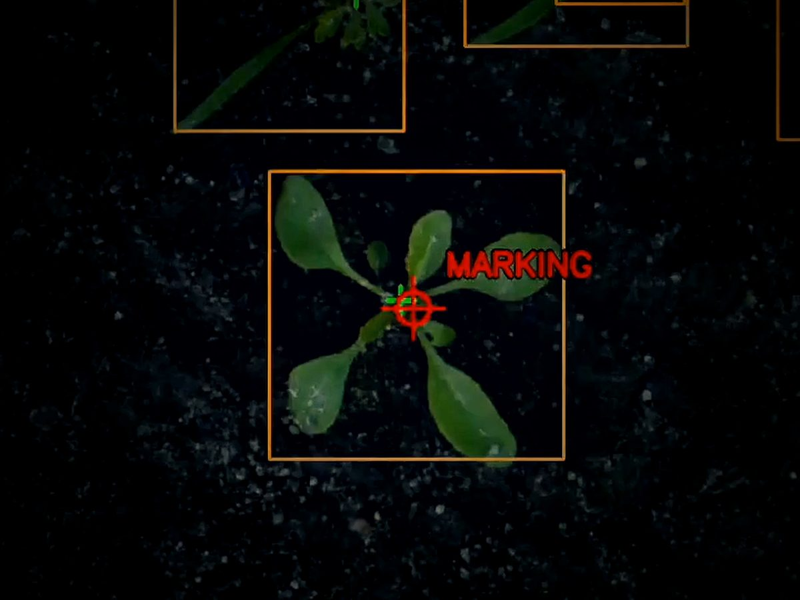
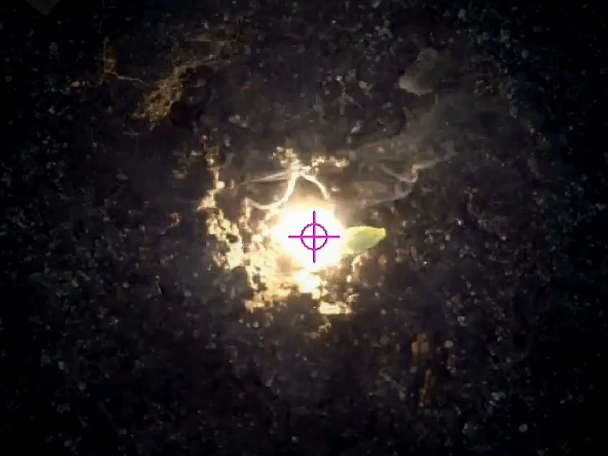

Technology
How Ecoray finds a 5 mm weed next to your crop and removes it with a single laser pulse.
How it works
Every module runs its own closed pipeline from camera to laser, while the tractor drives at 1–3 km/h.
-
Detect
Colour cameras image the bed under a light-sealed hood. Strobed LED lighting makes every frame look the same, in sun, cloud or dusk.
-
Target
Neural networks on an edge computer classify crop and weed and locate each weed's meristem, the growth point it regrows from.
-
Eliminate
Galvanometer scanners steer a fibre-coupled laser onto the meristem. A short pulse stops the weed growing, and it withers.

Vision and AI
Telling a seedling weed from a seedling crop at the cotyledon stage is the hard part. Ecoray does it on board, in real time.
Industrial colour cameras
Global-shutter colour cameras, a wide view to find plants and zoomed views to place the shot.
Controlled light
LED bar lights strobe in sync with the cameras inside the sealed hood, so the AI sees the same scene whatever the weather.
Edge AI
Detection and meristem localisation run on an NVIDIA Jetson edge computer in each module. No cloud connection needed in the field.
Trained on Danish fields
About one million field images, of which around 200,000 are annotated, covering broad-leaved weeds and grasses.

Laser and optics
A weed regrows from its meristem. Hit the growth point precisely and you don't need to burn the whole plant.
Galvo beam steering
Two galvanometer scanners per module move the beam between targets in milliseconds, each covering its own scan field.
Fibre-coupled diode laser
The laser source sits protected inside the module and delivers its energy to the optics through a fibre.
Ground-speed tracking
Optical flow measures how the ground moves under the module, so each shot lands where the weed is, not where it was.
Built in a cleanroom
The optical assembly is built and aligned in a cleanroom at Aarhus University, through ESA BIC Denmark.
Safety by design
The AI decides what to shoot. It never decides whether the laser is allowed to fire.
Sealed hood
The laser only fires inside a rigid aluminium hood. A slit EPDM rubber skirt follows the ground and keeps light in.
Hardwired interlocks
Safety functions are wired in hardware and work independently of the software. Machine learning sits outside the safety chain.
Standards
Designed to EN ISO 12100, EN ISO 11553-1 and EN 60825-1, with CE marking under the EU Machinery Regulation 2023/1230.
Built for the field
IP69K enclosure
Aluminium enclosure sealed with EPDM gaskets against rain, dust and high-pressure washdown, with no holes drilled through the walls.
Liquid cooling
A closed coolant loop keeps the laser at its operating temperature through a long day in the field.
Vibration-isolated optics
The optics sit on an isolated breadboard, so tractor vibration doesn't move the aim point.
Technical specifications
| Performance | |
|---|---|
| Weeds detected | 96.5% (field-validated) |
| Crop damage | 0.1% (field-validated) |
| Target weeds | 5–25 mm, cotyledon stage, broad-leaved and grasses |
| Capacity | ≈0.2 ha/h per module, ≈1 ha/h with 5 modules |
| Driving speed | 1–3 km/h, depending on weed pressure |
| Vision | |
| Cameras | Industrial global-shutter colour cameras, wide and zoom |
| Illumination | Strobed LED bar lights, camera-synchronised |
| Compute | NVIDIA Jetson edge computer, one per module |
| AI | Weed/crop detection and meristem localisation |
| Motion reference | Optical flow |
| Laser | |
| Source | Fibre-coupled diode laser |
| Beam steering | 2 galvanometer scanners per module |
| Cooling | Closed-loop liquid cooling |
| Machine | |
| Model | Ecoray ONE (GG-LWM-280) |
| Working width | About 1 m per module, 2 to 5 modules |
| Mounting | Three-point hitch, gauge wheels per module |
| Enclosure | Aluminium, IP69K |
| Safety and compliance | |
| Containment | Light-sealed hood with EPDM rubber skirt |
| Interlocks | Hardwired, independent of software |
| Standards | EN ISO 12100, EN ISO 11553-1, EN 60825-1 |
| Conformity | CE, EU Machinery Regulation 2023/1230 (in preparation) |
Preliminary specifications. Subject to change before series production.
See it for yourself
Reserve Ecoray for April 2027, or talk to our engineers about the technology.